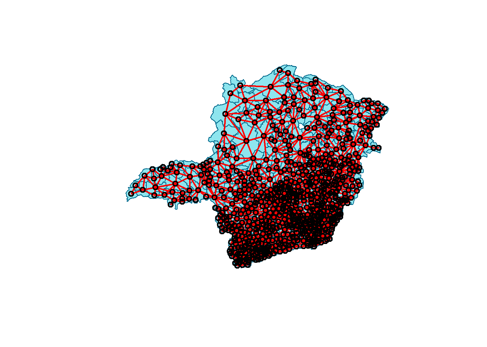
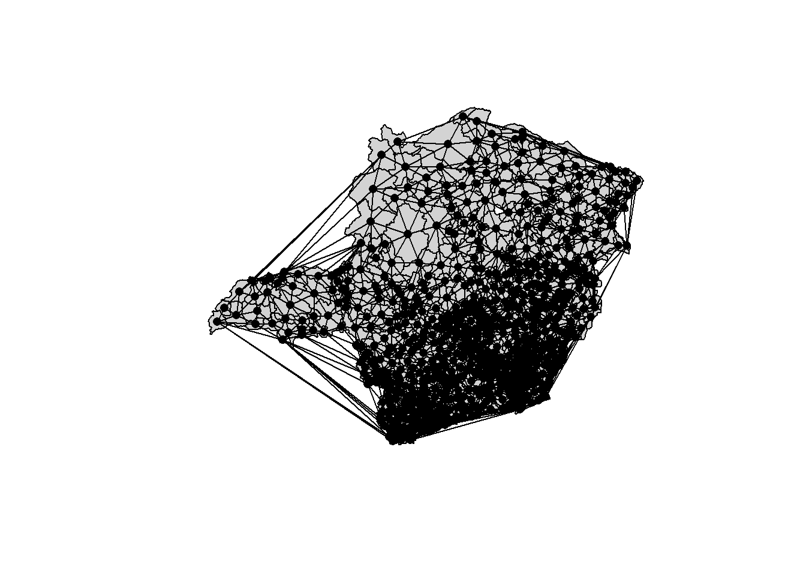
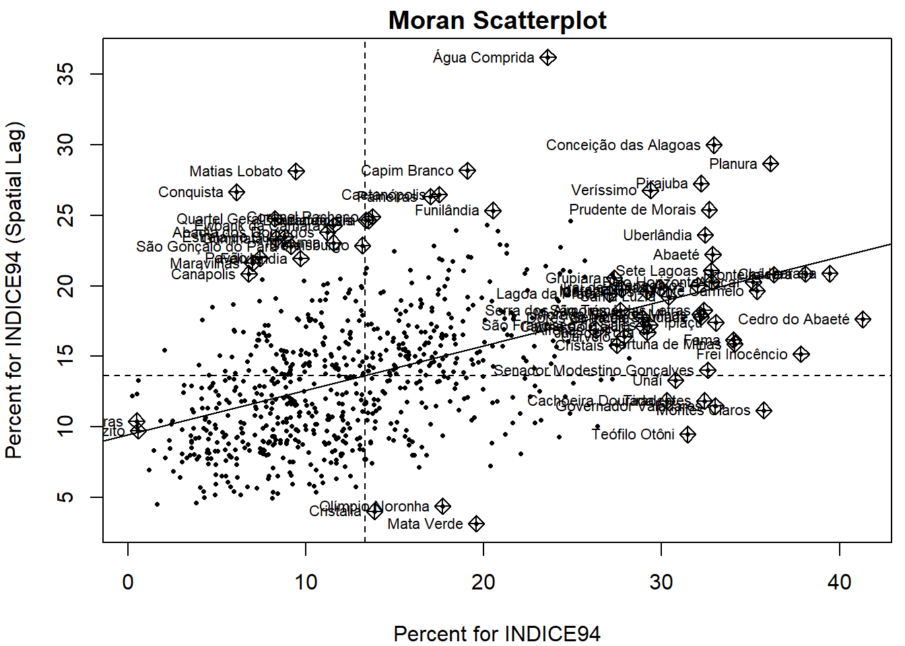
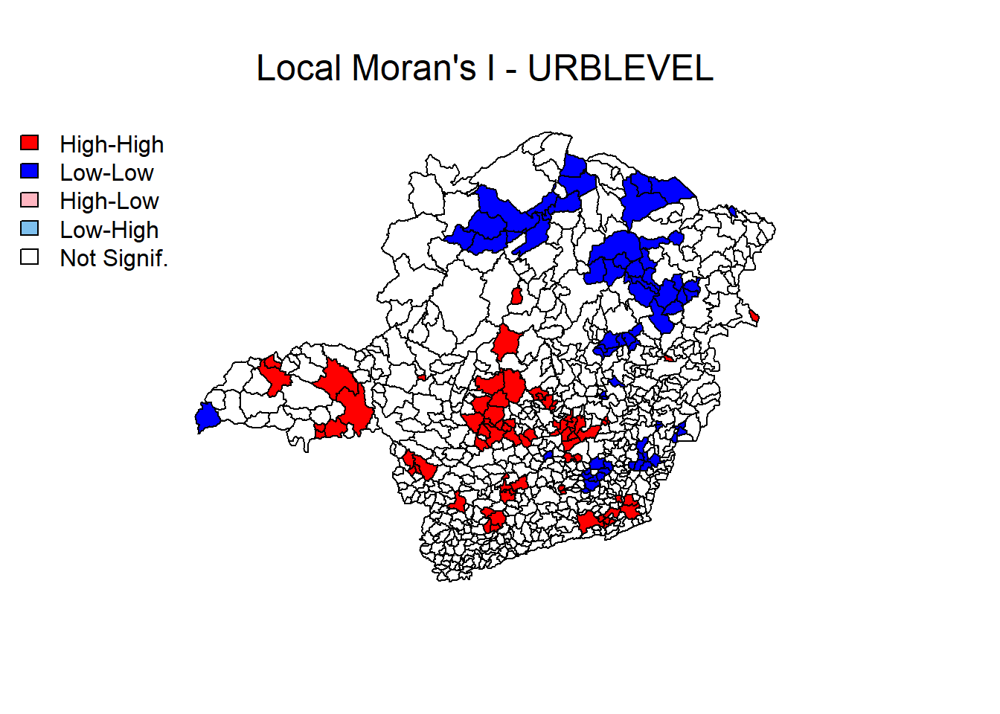
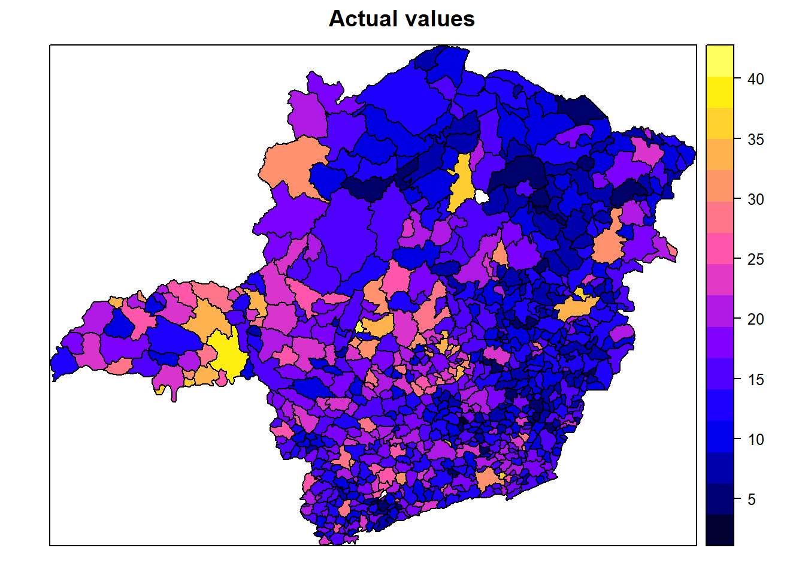
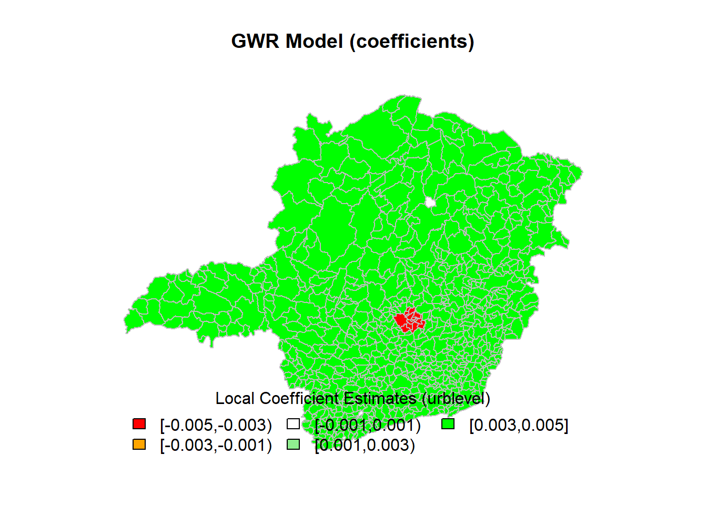

Conclusion
September, 2019
Objective
The objective of this reports is to answer the Spatial Statistcs assignment class given by the professor Eduardo Franscisco.
The target dataset and shapefile is the one already processed during the data preparation phase. Thus, for the final reports we have to start by loading the processed shapefile.
# performing data (processed) loading
dataRawDirectory <- "./data/processed/"
shapefile_to_read <- paste(dataRawDirectory, "crime_mg_processed.shp", sep = "")
target <- readOGR(shapefile_to_read, encoding="UTF-8")## OGR data source with driver: ESRI Shapefile
## Source: "D:\OneDrive\FGV\04_Modulos\06 - Estatistica Espacial\Spatial-Statistics\data\processed\crime_mg_processed.shp", layer: "crime_mg_processed"
## with 754 features
## It has 17 fieldsPergunta 1
Qual das variáveis quantitativas apresentadas no shapefile crime_mg apresenta maior auto-correlação espacial? Descreva como implementou a matriz de vizinhança. Apresente o I de Moran e o mapa de auto-correlação espacial local (LISA map) da variável escolhida e também de pelo menos outras 3 variáveis.
Obs: desconsidere as variáveis Codmuni, ID, X_coord e Y_coord nessa análise.
Resposta
# getting the centroids of the polygons
xy <- coordinates(target)
# neighborhood matrix from spatial polygons / adjacent polygons
# using the spdep library to generate first order
ap <- poly2nb(target, queen = T, row.names = target$ID)
lw <- nb2listw(ap, style = "W", zero.policy = TRUE)
plot(target, col = 'cadetblue2', border = 'deepskyblue4', lwd = 1)
plot(ap, xy, col = 'red', lwd = 2, add = TRUE)

##
## PLEASE NOTE: The components "delsgs" and "summary" of the
## object returned by deldir() are now DATA FRAMES rather than
## matrices (as they were prior to release 0.0-18).
## See help("deldir").
##
## PLEASE NOTE: The process that deldir() uses for determining
## duplicated points has changed from that used in version
## 0.0-9 of this package (and previously). See help("deldir").

# global autocorrelation tests: Moran's I
moran.test.AREA <- moran.test(target$AREA, listw = lw, zero.policy = T)
moran.test.INDICE94 <- moran.test(target$INDICE94, listw = lw, zero.policy = T)
moran.test.INDICE95 <- moran.test(target$INDICE95, listw = lw, zero.policy = T)
moran.test.GINI_91 <- moran.test(target$GINI_91, listw = lw, zero.policy = T)
moran.test.POP_94 <- moran.test(target$POP_94, listw = lw, zero.policy = T)
moran.test.POP_RUR <- moran.test(target$POP_RUR, listw = lw, zero.policy = T)
moran.test.POP_URB <- moran.test(target$POP_URB, listw = lw, zero.policy = T)
moran.test.POP_FEM <- moran.test(target$POP_FEM, listw = lw, zero.policy = T)
moran.test.POP_MAS <- moran.test(target$POP_MAS, listw = lw, zero.policy = T)
moran.test.POP_TOT <- moran.test(target$POP_TOT, listw = lw, zero.policy = T)
moran.test.URBLEVEL <- moran.test(target$URBLEVEL, listw = lw, zero.policy = T)
moran.test.PIB_PC <- moran.test(target$PIB_PC, listw = lw, zero.policy = T)
moran.test.all <- rbind(t(data.frame("AREA" = moran.test.AREA$estimate)),
t(data.frame("INDICE94" = moran.test.INDICE94$estimate)),
t(data.frame("INDICE95" = moran.test.INDICE95$estimate)),
t(data.frame("GINI_91" = moran.test.GINI_91$estimate)),
t(data.frame("POP_94" = moran.test.POP_94$estimate)),
t(data.frame("POP_RUR" = moran.test.POP_RUR$estimate)),
t(data.frame("POP_URB" = moran.test.POP_URB$estimate)),
t(data.frame("POP_FEM" = moran.test.POP_FEM$estimate)),
t(data.frame("POP_MAS" = moran.test.POP_MAS$estimate)),
t(data.frame("POP_TOT" = moran.test.POP_TOT$estimate)),
t(data.frame("URBLEVEL" = moran.test.URBLEVEL$estimate)),
t(data.frame("PIB_PC" = moran.test.PIB_PC$estimate)))
moran.test.all <- as_tibble(moran.test.all, rownames = "Variables")
moran.test.all %>% arrange(desc(`Moran I statistic`))## Registered S3 method overwritten by 'cli':
## method from
## print.boxx spatstat## # A tibble: 12 x 4
## Variables `Moran I statistic` Expectation Variance
## <chr> <dbl> <dbl> <dbl>
## 1 AREA 0.551 -0.00133 0.000474
## 2 INDICE94 0.316 -0.00133 0.000498
## 3 INDICE95 0.303 -0.00133 0.000499
## 4 URBLEVEL 0.291 -0.00133 0.000499
## 5 POP_RUR 0.291 -0.00133 0.000487
## 6 GINI_91 0.130 -0.00133 0.000492
## 7 POP_94 0.130 -0.00133 0.000180
## 8 POP_MAS 0.128 -0.00133 0.000180
## 9 POP_TOT 0.123 -0.00133 0.000172
## 10 PIB_PC 0.122 -0.00133 0.000466
## 11 POP_FEM 0.118 -0.00133 0.000165
## 12 POP_URB 0.116 -0.00133 0.000157## # A tibble: 12 x 4
## Variables `Moran I statistic` Expectation Variance
## <chr> <dbl> <dbl> <dbl>
## 1 AREA 0.551 -0.00133 0.000474
## 2 INDICE94 0.316 -0.00133 0.000498
## 3 INDICE95 0.303 -0.00133 0.000499
## 4 GINI_91 0.130 -0.00133 0.000492
## 5 POP_94 0.130 -0.00133 0.000180
## 6 POP_RUR 0.291 -0.00133 0.000487
## 7 POP_URB 0.116 -0.00133 0.000157
## 8 POP_FEM 0.118 -0.00133 0.000165
## 9 POP_MAS 0.128 -0.00133 0.000180
## 10 POP_TOT 0.123 -0.00133 0.000172
## 11 URBLEVEL 0.291 -0.00133 0.000499
## 12 PIB_PC 0.122 -0.00133 0.000466# Moran scatterplot for INDICE94
par(mar = c(4,4,1.5,0.5))
moran.plot(target$INDICE94,
listw = lw,
zero.policy = T,
pch = 16,
col = "black",
cex = .5,
quiet = F,
labels = as.character(target$MUNIC),
xlab = "Percent for INDICE94",
ylab = "Percent for INDICE94 (Spatial Lag)",
main = "Moran Scatterplot")
## Potentially influential observations of
## lm(formula = wx ~ x) :
##
## dfb.1_ dfb.x dffit cov.r cook.d hat
## Abadia dos Dourados 0.07 -0.03 0.10 0.99_* 0.00 0.00
## Abaeté -0.04 0.06 0.06 1.01_* 0.00 0.01_*
## Água Comprida -0.13 0.24 0.30_* 0.95_* 0.04 0.00
## Alfenas 0.01 -0.01 -0.02 1.01_* 0.00 0.01
## Araçaí 0.00 -0.01 -0.01 1.02_* 0.00 0.01_*
## Belo Horizonte -0.01 0.01 0.01 1.01_* 0.00 0.01_*
## Cachoeira Dourada 0.10 -0.15 -0.16_* 1.00 0.01 0.01_*
## Caetanópolis 0.00 0.06 0.12 0.98_* 0.01 0.00
## Canápolis 0.10 -0.07 0.11 0.99_* 0.01 0.00
## Capim Branco -0.02 0.09 0.14 0.98_* 0.01 0.00
## Carmo do Cajuru 0.02 -0.03 -0.03 1.01_* 0.00 0.01
## Cedro do Abaeté 0.13 -0.17 -0.17_* 1.02_* 0.01 0.02_*
## Chácara 0.01 -0.02 -0.02 1.02_* 0.00 0.02_*
## Conceição das Alagoas -0.17 0.24 0.26_* 1.00 0.03 0.01_*
## Conceição das Pedras 0.01 -0.01 0.01 1.01_* 0.00 0.01
## Conquista 0.18 -0.13 0.19_* 0.97_* 0.02 0.00
## Cordisburgo 0.04 0.00 0.08 0.99_* 0.00 0.00
## Coronel Pacheco 0.04 0.01 0.10 0.99_* 0.00 0.00
## Cristais 0.03 -0.04 -0.04 1.01_* 0.00 0.01
## Cristália -0.04 -0.01 -0.09 0.99_* 0.00 0.00
## Curvelo 0.02 -0.03 -0.04 1.01_* 0.00 0.01
## Dores do Indaiá 0.01 -0.02 -0.02 1.01_* 0.00 0.01
## Douradoquara 0.04 0.00 0.10 0.99_* 0.00 0.00
## Estrela do Sul 0.10 -0.06 0.12 0.99_* 0.01 0.00
## Ewbank da Câmara 0.07 -0.02 0.10 0.98_* 0.01 0.00
## Fama 0.07 -0.10 -0.11 1.01_* 0.01 0.01_*
## Felixlândia 0.08 -0.04 0.09 0.99_* 0.00 0.00
## Fortuna de Minas 0.08 -0.11 -0.12 1.01_* 0.01 0.01_*
## Frei Inocêncio 0.14 -0.19 -0.19_* 1.01_* 0.02 0.02_*
## Fronteira 0.00 0.00 0.00 1.02_* 0.00 0.01_*
## Funilândia -0.03 0.08 0.12 0.99_* 0.01 0.00
## Governador Valadares 0.14 -0.20 -0.21_* 1.00 0.02 0.01_*
## Grupiara -0.03 0.04 0.05 1.01_* 0.00 0.01
## Gurinhatã 0.11 -0.07 0.12 0.99_* 0.01 0.00
## Igarapé -0.02 0.03 0.03 1.01_* 0.00 0.01
## Indianópolis 0.05 0.00 0.10 0.99_* 0.00 0.00
## Inhaúma 0.06 -0.02 0.09 0.99_* 0.00 0.00
## Ipiaçu 0.04 -0.06 -0.06 1.01_* 0.00 0.01_*
## Iraí de Minas -0.01 0.02 0.02 1.01_* 0.00 0.01_*
## Juiz de Fora 0.02 -0.04 -0.04 1.01_* 0.00 0.01
## Lagoa da Prata -0.02 0.02 0.03 1.01_* 0.00 0.01
## Maravilhas 0.11 -0.08 0.12 0.99_* 0.01 0.00
## Mata Verde 0.03 -0.09 -0.14 0.98_* 0.01 0.00
## Matias Lobato 0.13 -0.07 0.16_* 0.97_* 0.01 0.00
## Matozinhos -0.01 0.02 0.02 1.01_* 0.00 0.01
## Monte Carmelo 0.02 -0.03 -0.03 1.02_* 0.00 0.01_*
## Montes Claros 0.19 -0.26 -0.27_* 1.00 0.04 0.01_*
## Morada Nova de Minas 0.03 -0.04 -0.04 1.01_* 0.00 0.01_*
## Olímpio Noronha 0.00 -0.06 -0.11 0.99_* 0.01 0.00
## Paineiras 0.00 0.05 0.11 0.98_* 0.01 0.00
## Papagaios -0.01 0.01 0.01 1.01_* 0.00 0.01_*
## Pavão 0.11 -0.07 0.12 0.99_* 0.01 0.00
## Pirajuba -0.12 0.18 0.19_* 1.00 0.02 0.01_*
## Planura -0.16 0.22 0.23_* 1.01 0.03 0.01_*
## Prudente de Morais -0.09 0.13 0.14 1.01_* 0.01 0.01_*
## Quartel Geral 0.12 -0.08 0.14 0.98_* 0.01 0.00
## Queluzito 0.00 0.00 0.00 1.01_* 0.00 0.01
## Santa Luzia 0.00 0.00 0.00 1.01_* 0.00 0.01_*
## São Francisco de Sales 0.02 -0.03 -0.03 1.01_* 0.00 0.01
## São Gonçalo do Pará 0.09 -0.05 0.11 0.99_* 0.01 0.00
## São Tomé das Letras 0.02 -0.03 -0.03 1.01_* 0.00 0.01_*
## Senador Modestino Gonçalves 0.09 -0.13 -0.14 1.01_* 0.01 0.01_*
## Serra da Saudade 0.03 -0.04 -0.04 1.01_* 0.00 0.01_*
## Serra dos Aimorés 0.00 0.00 0.00 1.01_* 0.00 0.01
## Sete Lagoas -0.02 0.03 0.03 1.01_* 0.00 0.01_*
## Teófilo Otôni 0.15 -0.22 -0.24_* 1.00 0.03 0.01_*
## Tiradentes 0.13 -0.18 -0.19_* 1.00 0.02 0.01_*
## Uberaba 0.02 -0.03 -0.03 1.02_* 0.00 0.02_*
## Uberlândia -0.06 0.09 0.10 1.01_* 0.00 0.01_*
## Unaí 0.08 -0.12 -0.13 1.01 0.01 0.01_*
## Veríssimo -0.10 0.16 0.17_* 1.00 0.01 0.01# LISA map for INDICE94
locm <- localmoran(target$INDICE94,lw)
target$sPPOV <- scale(target$INDICE94)
target$lag_sPPOV <- lag.listw(lw, target$sPPOV)
plot(x = target$sPPOV, y = target$lag_sPPOV, main = "Moran Scatterplot PPOV")
abline(h = 0, v = 0)
abline(lm(target$lag_sPPOV ~ target$sPPOV), lty = 3, lwd = 4, col = "red")
# check out the outliers click on one or two and then hit escape or click finish
# identify(target$sPPOV, target$lag_sPPOV, target$INDICE94, cex = 0.8)
target$quad_sig <- NA
target@data[(target$sPPOV >= 0 & target$lag_sPPOV >= 0) & (locm[, 5] <= 0.05), "quad_sig"] <- 1
target@data[(target$sPPOV <= 0 & target$lag_sPPOV <= 0) & (locm[, 5] <= 0.05), "quad_sig"] <- 2
target@data[(target$sPPOV >= 0 & target$lag_sPPOV <= 0) & (locm[, 5] <= 0.05), "quad_sig"] <- 3
target@data[(target$sPPOV >= 0 & target$lag_sPPOV <= 0) & (locm[, 5] <= 0.05), "quad_sig"] <- 4
target@data[(target$sPPOV <= 0 & target$lag_sPPOV >= 0) & (locm[, 5] > 0.05), "quad_sig"] <- 5
breaks <- seq(1, 5, 1)
labels <- c("High-High", "Low-Low", "High-Low", "Low-High", "Not Signif.")
np <- findInterval(target$quad_sig, breaks)
colors <- c("red", "blue", "lightpink", "skyblue2", "white")
par(mar = c(4,0,4,1))
plot(target, col = colors[np])
mtext("Local Moran's I - INDICE94", cex = 1.5, side = 3, line = 1)
legend("topleft", legend = labels, fill = colors, bty = "n")
# LISA map for INDICE95
locm <- localmoran(target$INDICE95,lw)
target$sPPOV <- scale(target$INDICE95)
target$lag_sPPOV <- lag.listw(lw, target$sPPOV)
target$quad_sig <- NA
target@data[(target$sPPOV >= 0 & target$lag_sPPOV >= 0) & (locm[, 5] <= 0.05), "quad_sig"] <- 1
target@data[(target$sPPOV <= 0 & target$lag_sPPOV <= 0) & (locm[, 5] <= 0.05), "quad_sig"] <- 2
target@data[(target$sPPOV >= 0 & target$lag_sPPOV <= 0) & (locm[, 5] <= 0.05), "quad_sig"] <- 3
target@data[(target$sPPOV >= 0 & target$lag_sPPOV <= 0) & (locm[, 5] <= 0.05), "quad_sig"] <- 4
target@data[(target$sPPOV <= 0 & target$lag_sPPOV >= 0) & (locm[, 5] > 0.05), "quad_sig"] <- 5
breaks <- seq(1, 5, 1)
labels <- c("High-High", "Low-Low", "High-Low", "Low-High", "Not Signif.")
np <- findInterval(target$quad_sig, breaks)
colors <- c("red", "blue", "lightpink", "skyblue2", "white")
par(mar = c(4,0,4,1))
plot(target, col = colors[np])
mtext("Local Moran's I - INDICE95", cex = 1.5, side = 3, line = 1)
legend("topleft", legend = labels, fill = colors, bty = "n")
# LISA map for URBLEVEL
locm <- localmoran(target$URBLEVEL,lw)
target$sPPOV <- scale(target$URBLEVEL)
target$lag_sPPOV <- lag.listw(lw, target$sPPOV)
target$quad_sig <- NA
target@data[(target$sPPOV >= 0 & target$lag_sPPOV >= 0) & (locm[, 5] <= 0.05), "quad_sig"] <- 1
target@data[(target$sPPOV <= 0 & target$lag_sPPOV <= 0) & (locm[, 5] <= 0.05), "quad_sig"] <- 2
target@data[(target$sPPOV >= 0 & target$lag_sPPOV <= 0) & (locm[, 5] <= 0.05), "quad_sig"] <- 3
target@data[(target$sPPOV >= 0 & target$lag_sPPOV <= 0) & (locm[, 5] <= 0.05), "quad_sig"] <- 4
target@data[(target$sPPOV <= 0 & target$lag_sPPOV >= 0) & (locm[, 5] > 0.05), "quad_sig"] <- 5
breaks <- seq(1, 5, 1)
labels <- c("High-High", "Low-Low", "High-Low", "Low-High", "Not Signif.")
np <- findInterval(target$quad_sig, breaks)
colors <- c("red", "blue", "lightpink", "skyblue2", "white")
par(mar = c(4,0,4,1))
plot(target, col = colors[np])
mtext("Local Moran's I - URBLEVEL", cex = 1.5, side = 3, line = 1)
legend("topleft", legend = labels, fill = colors, bty = "n")
# LISA map for POPRUR
locm <- localmoran(target$POP_RUR,lw)
target$sPPOV <- scale(target$POP_RUR)
target$lag_sPPOV <- lag.listw(lw, target$sPPOV)
target$quad_sig <- NA
target@data[(target$sPPOV >= 0 & target$lag_sPPOV >= 0) & (locm[, 5] <= 0.05), "quad_sig"] <- 1
target@data[(target$sPPOV <= 0 & target$lag_sPPOV <= 0) & (locm[, 5] <= 0.05), "quad_sig"] <- 2
target@data[(target$sPPOV >= 0 & target$lag_sPPOV <= 0) & (locm[, 5] <= 0.05), "quad_sig"] <- 3
target@data[(target$sPPOV >= 0 & target$lag_sPPOV <= 0) & (locm[, 5] <= 0.05), "quad_sig"] <- 4
target@data[(target$sPPOV <= 0 & target$lag_sPPOV >= 0) & (locm[, 5] > 0.05), "quad_sig"] <- 5
breaks <- seq(1, 5, 1)
labels <- c("High-High", "Low-Low", "High-Low", "Low-High", "Not Signif.")
np <- findInterval(target$quad_sig, breaks)
colors <- c("red", "blue", "lightpink", "skyblue2", "white")
par(mar = c(4,0,4,1))
plot(target, col = colors[np])
mtext("Local Moran's I - POPRUR", cex = 1.5, side = 3, line = 1)
legend("topleft", legend = labels, fill = colors, bty = "n")
Pergunta 2
Implemente o modelo espacial auto-regressivo (SAR) da variável Indice95 (índice de criminalidade em 1995 de Minas Gerais) a partir de apenas uma variável independente (não pode ser Indice94, Codmuni, ID, X_coord nem Y_coord). Apresente o resultado da regressão linear simples e da regressão linear espacial. Apresente as equações e interprete seus coeficientes.
Resposta
Equação da regressão linear simples:
\(INDICE95= 6.3208+16.9877*URBLEVEL\)
Interpretando os coeficientes do modelo de regressão linear simples temos que, para cada ponto adicional do índice de urbanização (URBLEVEL), é esperado um aumento de aproximadamente 16.99 no índice de criminalidade INDICE95.
Para um município com o índice de urbanização 0 é esperado um índice de criminalidade de aproximadamente 6.32.
Equação da regressão espacial (SAR):
\(INDICE95= 2.35307+13.93704*URBLEVEL+0.35437*LAG_INDICE95\)
Interpretando os coeficientes do modelo de regressão espacial (SAR) temos que, para cada ponto adicional do índice de urbanização (URBLEVEL), é esperado um aumento de aproximadamente 13.94 no índice de criminalidade INDICE95.
# initial setup
res.palette <- colorRampPalette(c("red","orange","white","lightgreen","green"),
space = "rgb")
pal <- res.palette(5)
par(mar = c(2, 0, 4, 0))
# linear regresion model
target.lm.model <- lm(INDICE95 ~ URBLEVEL, data = target)
summary(target.lm.model)##
## Call:
## lm(formula = INDICE95 ~ URBLEVEL, data = target)
##
## Residuals:
## Min 1Q Median 3Q Max
## -14.873 -4.664 -1.174 3.639 37.569
##
## Coefficients:
## Estimate Std. Error t value Pr(>|t|)
## (Intercept) 6.3208 0.6251 10.11 <2e-16 ***
## URBLEVEL 16.9877 1.0667 15.93 <2e-16 ***
## ---
## Signif. codes: 0 '***' 0.001 '**' 0.01 '*' 0.05 '.' 0.1 ' ' 1
##
## Residual standard error: 6.845 on 752 degrees of freedom
## Multiple R-squared: 0.2522, Adjusted R-squared: 0.2512
## F-statistic: 253.6 on 1 and 752 DF, p-value: < 2.2e-16target.lm.model.residuals <- target.lm.model$residuals
target.lm.model.class_fx <- classIntervals(target.lm.model.residuals,
n = 5,
style = "fixed",
fixedBreaks = c(-50,-25,-5,5,25,50),
rtimes = 1)
cols.lm <- findColours(target.lm.model.class_fx, pal)
plot(target, col = cols.lm, main = "OLS Model", border = "grey")
legend(x = "bottom", cex = 1, fill = attr(cols.lm, "palette"), bty = "n",
legend = names(attr(cols.lm, "table")), title = "Residuals from OLS Model",
ncol = 5)
##
## Moran I test under randomisation
##
## data: target.lm.model.residuals
## weights: lw
##
## Moran I statistic standard deviate = 7.546, p-value = 2.243e-14
## alternative hypothesis: greater
## sample estimates:
## Moran I statistic Expectation Variance
## 0.1669929330 -0.0013280212 0.0004975504# SAR model (Spatial Auto-Regressive)
target.sar.model <- lagsarlm(INDICE95 ~ URBLEVEL,
data = target,
listw = lw,
zero.policy = T,
tol.solve = 1e-12)## Warning: Function lagsarlm moved to the spatialreg package##
## Call:spatialreg::lagsarlm(formula = formula, data = data, listw = listw,
## na.action = na.action, Durbin = Durbin, type = type, method = method,
## quiet = quiet, zero.policy = zero.policy, interval = interval,
## tol.solve = tol.solve, trs = trs, control = control)
##
## Residuals:
## Min 1Q Median 3Q Max
## -15.2482 -4.2371 -1.0771 3.3952 33.9250
##
## Type: lag
## Coefficients: (asymptotic standard errors)
## Estimate Std. Error z value Pr(>|z|)
## (Intercept) 2.35307 0.79725 2.9515 0.003163
## URBLEVEL 13.93704 1.04857 13.2914 < 2.2e-16
##
## Rho: 0.35437, LR test value: 66.163, p-value: 4.4409e-16
## Asymptotic standard error: 0.044457
## z-value: 7.9712, p-value: 1.5543e-15
## Wald statistic: 63.539, p-value: 1.5543e-15
##
## Log likelihood: -2486.1 for lag model
## ML residual variance (sigma squared): 41.776, (sigma: 6.4634)
## Number of observations: 754
## Number of parameters estimated: 4
## AIC: 4980.2, (AIC for lm: 5044.4)
## LM test for residual autocorrelation
## test value: 10.579, p-value: 0.001144## (Intercept) URBLEVEL
## 0.7972549 1.0485725## 0 1 2 3 4
## -1.58573227 15.11949080 -2.88834928 -3.59293083 -3.61613767
## 5 6 7 8 9
## 2.89833156 7.72429160 1.58579267 7.48895546 -5.57317267
## 10 11 12 13 14
## 1.67737185 -5.80996633 0.59142126 8.98849681 -6.55369940
## 15 16 17 18 19
## 7.02921055 3.70401583 6.27599211 -1.85572889 2.33982819
## 20 21 22 23 24
## 1.10199730 -8.98115413 4.71231028 -9.56843638 -7.27033724
## 25 26 27 28 29
## 3.25958189 -5.66083628 3.66781636 -5.67019504 -1.97096879
## 30 31 32 33 34
## 0.48106697 -6.90524423 7.25894489 -13.06181545 0.70453362
## 35 36 37 38 39
## 9.25561950 5.85086023 -1.88716797 19.68552390 -5.23508915
## 40 41 42 43 44
## -11.19562680 3.04650663 3.02672027 -2.30617984 0.87083261
## 45 46 47 48 49
## -5.85216659 0.35140497 -8.98355022 -1.35592676 -1.46917863
## 50 51 52 53 54
## -3.00784683 0.61006736 0.33505702 -7.33656753 -4.41819925
## 55 56 57 58 59
## -5.01117378 -10.18779603 0.87865604 -4.43693321 -1.46131032
## 60 61 62 63 64
## -6.58105040 -0.40488887 7.06364395 -5.54560832 -0.59904728
## 65 66 67 68 69
## -2.05088288 -0.59279586 0.22818612 -0.05750345 5.65612459
## 70 71 72 73 74
## 5.20976234 5.05161331 1.84464065 -1.90801164 -3.08056635
## 75 76 77 78 79
## -4.59154537 -3.39395454 -3.28119985 -0.78346958 0.08334148
## 80 81 82 83 84
## 3.43212622 -0.66399318 -9.57119206 -4.79523292 -5.36106607
## 85 86 87 88 89
## -3.85690642 -7.25241253 -3.91356042 19.16841613 -7.60572614
## 90 91 92 93 94
## -2.10971813 -0.98323884 2.22939877 3.88033430 -2.80588312
## 95 96 97 98 99
## -0.10297392 -2.50072112 -6.58254136 -4.04622512 25.90145957
## 100 101 102 103 104
## -5.30003233 -5.21244221 10.81695112 5.51994688 -3.62798425
## 105 106 107 108 109
## -1.07282017 -1.41845979 13.31565083 5.99416880 3.00837678
## 110 111 112 113 114
## 1.48108706 4.30067213 1.25054247 -3.44519520 -0.44414583
## 115 116 117 118 119
## -3.04894270 1.43084850 -3.61763926 14.31257108 -2.10432951
## 120 121 122 123 124
## -9.13565165 -0.33138172 8.69580572 -6.74358315 -0.12724273
## 125 126 127 128 129
## 6.00161319 -4.49011104 -5.68782850 -0.83002606 3.46237119
## 130 131 132 133 134
## 6.55085422 -2.15156750 -4.46078935 -1.99631583 -0.15945117
## 135 136 137 138 139
## 6.09146182 -0.64605722 -0.45495484 -3.70553789 2.13474371
## 140 141 142 143 144
## 4.12640838 -5.37261491 -5.17013550 -2.40390927 15.84480295
## 145 146 147 148 149
## -2.54979425 1.37498915 -1.40688649 4.48276526 1.42360790
## 150 151 152 153 154
## -6.35673837 -1.37432981 -12.01918078 -3.90067989 4.28776460
## 155 156 157 158 159
## -3.87588211 5.54202337 1.07757022 2.85922473 6.63077317
## 160 161 162 163 164
## -9.18489442 -6.96137542 0.08247184 0.74750599 -3.52734005
## 165 166 167 168 169
## -5.38241310 16.84245021 4.63642959 -6.12427857 -3.09866679
## 170 171 172 173 174
## 4.85725037 -2.39560748 -5.36947685 -2.26580753 -1.72517906
## 175 176 177 178 179
## -5.77237309 10.82785885 -10.69102821 -4.76761724 4.21529988
## 180 181 182 183 184
## 10.73993175 -0.99591862 -5.45879181 -5.54644962 -2.00934544
## 185 186 187 188 189
## -4.58884514 -15.24819830 -2.38115972 -0.25679304 2.98073732
## 190 191 192 193 194
## 2.42720484 -2.91315866 -2.62265518 -2.35113345 1.34152472
## 195 196 197 198 199
## 4.09477184 -4.96809162 6.99136215 -7.28679215 -5.94279767
## 200 201 202 203 204
## -8.45594769 -2.75349781 0.57983211 -5.24033542 -0.44378910
## 205 206 207 208 209
## 4.71141192 15.52473566 0.86878183 -0.67780446 -3.29929234
## 210 211 212 213 214
## 1.48430209 -12.30380191 0.10471054 11.59917493 -5.56228876
## 215 216 217 218 219
## -4.04898549 7.34166794 -5.73668179 -1.10107528 0.65290860
## 220 221 222 223 224
## -0.68168001 -8.56414275 -3.33618425 0.74701985 3.90573485
## 225 226 227 228 229
## -5.91195898 -0.15433057 2.85141680 -8.06123700 -3.23102236
## 230 231 232 233 234
## -3.92266634 -4.81136818 -3.60455357 -1.14637545 -10.85405585
## 235 236 237 238 239
## -7.83676238 -1.33583131 9.77210741 5.14096871 7.83141816
## 240 241 242 243 244
## -9.32584081 2.80064751 -5.38354058 -0.81060928 -1.53289079
## 245 246 247 248 249
## 3.90275345 6.84717735 0.19897530 5.79082264 2.49473836
## 250 251 252 253 254
## -1.22742324 -1.13717536 -0.47178315 -2.61858699 -0.46204072
## 255 256 257 258 259
## -8.36243880 -0.72013731 -3.89189385 6.52517363 6.18119490
## 260 261 262 263 264
## -3.26334161 -2.24277972 -2.58990072 -7.87341041 -4.26731796
## 265 266 267 268 269
## -3.33679476 5.23580083 -5.93816940 -1.91436780 -1.99138453
## 270 271 272 273 274
## -3.78560373 12.13980895 -1.08135616 1.00239209 1.96035713
## 275 276 277 278 279
## -2.62582586 30.38675257 10.28853785 -5.84916965 3.42944816
## 280 281 282 283 284
## 14.95820920 -2.60744976 1.03521929 -6.18904302 -5.32846905
## 285 286 287 288 289
## 13.45694250 -5.76072471 19.53876261 -2.58688178 -2.97087469
## 290 291 292 293 294
## 0.36162116 -7.83038399 5.57241291 -3.77778376 0.44054375
## 295 296 297 298 299
## -1.45428460 -0.36404758 -10.95331462 1.39384545 -5.81042198
## 300 301 302 303 304
## 7.05685184 -7.04636271 2.51746594 3.12038977 -4.37642723
## 305 306 307 308 309
## -1.39861662 -5.28514678 8.16894811 -3.71341738 -0.38483866
## 310 311 312 313 314
## 11.62391992 -2.60127504 -4.95134629 -5.20890298 6.57097843
## 315 316 317 318 319
## 6.71617840 -5.37278897 5.30441073 -4.58823495 1.10500046
## 320 321 322 323 324
## 5.41096043 7.01920676 -2.22747850 7.80280858 9.36404321
## 325 326 327 328 329
## -0.89671135 -1.52429457 2.77891150 -8.58054356 -3.04228562
## 330 331 332 333 334
## 0.48257327 -1.47053285 -0.61904708 4.92441214 0.35713766
## 335 336 337 338 339
## 2.79937698 -3.30305859 3.65069198 3.66197487 -3.64905439
## 340 341 342 343 344
## 0.70332142 2.45305804 -3.82264755 25.23029508 -3.49814291
## 345 346 347 348 349
## -1.66415665 0.80927854 12.33317867 1.82675922 3.53309389
## 350 351 352 353 354
## -6.10836352 -6.12231464 -5.65110314 3.08537564 -7.31676116
## 355 356 357 358 359
## 5.91187684 -1.53232914 7.51424359 -4.67450918 -3.89999154
## 360 361 362 363 364
## 1.37888580 -5.03137537 2.07323074 -1.48019261 -2.65319716
## 365 366 367 368 369
## 0.03896715 3.85094919 -2.07162969 -4.97106848 -3.54004451
## 370 371 372 373 374
## 0.16734811 5.83854959 -5.59275502 3.74696428 -4.95593970
## 375 376 377 378 379
## -0.84342595 1.66162880 -7.34743913 18.61608706 7.89932189
## 380 381 382 383 384
## -6.22803254 -1.45969422 -2.88248354 7.33131419 3.52270342
## 385 386 387 388 389
## 1.00059950 -4.17186038 20.63990170 0.18273451 -3.07711510
## 390 391 392 393 394
## 1.89806192 1.18061662 -8.06053071 -4.21895763 4.33505627
## 395 396 397 398 399
## 2.05581136 -0.23828524 -5.64787597 -0.52549764 10.13162820
## 400 401 402 403 404
## 2.70870270 0.80599513 3.09485726 9.44008218 -4.20521659
## 405 406 407 408 409
## -1.78149259 -0.21946582 -0.30544192 -0.70022148 3.92942272
## 410 411 412 413 414
## 4.75617587 -1.14509821 -5.36632715 -8.62467055 3.73934592
## 415 416 417 418 419
## -9.55986954 -4.78015855 7.23752584 -6.15867791 -0.77307067
## 420 421 422 423 424
## 14.84905353 -2.83484094 -1.96983633 -12.39378783 11.37789905
## 425 426 427 428 429
## -12.33422163 -2.24621628 -3.79152480 5.93535509 -3.48007849
## 430 431 432 433 434
## -6.87388577 5.00900237 -6.12465520 -6.36897194 1.31495463
## 435 436 437 438 439
## -2.55775019 -1.88555326 -5.92023755 -5.04463351 -2.19686730
## 440 441 442 443 444
## -1.35603152 5.76406870 -7.98729143 -3.75292272 -3.76286453
## 445 446 447 448 449
## -2.44203484 -2.50768986 -2.41508169 -0.08137665 16.97409920
## 450 451 452 453 454
## -1.46139041 2.09172466 19.84637172 5.22387869 9.16468284
## 455 456 457 458 459
## -2.56056963 -7.57977064 -4.80955878 -2.70419646 2.97294912
## 460 461 462 463 464
## -0.11218890 5.79703262 1.49552949 -4.85522063 -5.18923285
## 465 466 467 468 469
## -2.09890058 -3.27680552 2.84551165 -3.82762149 6.89887738
## 470 471 472 473 474
## -3.97474611 14.42447459 0.09524712 -3.20217783 -1.44320763
## 475 476 477 478 479
## 8.38551942 1.62058890 5.49853286 6.61970670 0.23284493
## 480 481 482 483 484
## 1.08711959 1.43430136 0.77534659 2.16137164 2.55847642
## 485 486 487 488 489
## -6.29885478 3.60511213 5.24643638 1.78845091 8.82558856
## 490 491 492 493 494
## -0.61566352 3.21957627 -2.92681517 2.81264408 3.67866220
## 495 496 497 498 499
## 0.25226950 -4.72464675 -2.29751609 -4.65025081 5.09558822
## 500 501 502 503 504
## 9.43764544 3.52263201 -1.09284617 -8.19270966 -5.01653537
## 505 506 507 508 509
## -6.87265305 -7.07193467 -7.66852200 1.64263375 5.91480537
## 510 511 512 513 514
## 3.77091851 1.66094087 1.30521383 -13.20095511 -13.44405830
## 515 516 517 518 519
## -9.76512240 -6.08935066 -4.38229474 -11.02380645 6.67890532
## 520 521 522 523 524
## 6.13695927 -12.30924293 2.94380448 -1.45476191 3.15748105
## 525 526 527 528 529
## -2.97514508 7.04584954 -0.43718193 -2.41254367 1.43078544
## 530 531 532 533 534
## 5.80181269 -2.79608211 -3.27995965 5.14553689 -9.21211428
## 535 536 537 538 539
## 0.16634531 6.14820239 17.38765571 -4.90832799 7.86847163
## 540 541 542 543 544
## -5.71345233 1.00762424 1.65525095 -4.32357583 3.18975816
## 545 546 547 548 549
## -2.91018261 8.62308948 12.11813247 -7.98941796 -2.75528345
## 550 551 552 553 554
## 3.14324226 -7.72310534 4.98367370 1.05291262 -4.24317133
## 555 556 557 558 559
## -1.86417131 10.83876755 -2.60278763 0.50955763 -5.34451106
## 560 561 562 563 564
## -5.26303671 1.86443971 -0.57929254 0.21856885 0.11693719
## 565 566 567 568 569
## 3.08206378 -2.70971136 -7.00071943 -3.89188075 0.76280170
## 570 571 572 573 574
## -2.50838203 -0.74176716 -4.48531770 -2.30092342 -2.20751794
## 575 576 577 578 579
## 2.58326612 4.01392966 -1.18020677 -8.51409842 4.09415204
## 580 581 582 583 584
## -9.21637262 -1.61596072 -7.30528082 8.76915487 -1.93026012
## 585 586 587 588 589
## 3.22506567 -1.55799455 -7.93591513 -3.74467036 -4.13206371
## 590 591 592 593 594
## -1.70004185 -0.50912299 -7.97334507 -7.28098065 -3.52262542
## 595 596 597 598 599
## -3.06261193 -4.20266964 -7.69957645 -3.48923453 -9.36829597
## 600 601 602 603 604
## -4.19944594 1.62282820 -3.07118507 -8.88721289 0.24295514
## 605 606 607 608 609
## 4.64415776 22.47026811 -2.97834273 -2.62293992 -7.99141355
## 610 611 612 613 614
## -4.87884924 -11.34320963 -1.75057724 -0.12958133 -10.85559190
## 615 616 617 618 619
## 15.99840162 21.15598957 -12.67122692 -9.46156635 -7.64725876
## 620 621 622 623 624
## 4.07883740 4.28564373 9.51080365 5.76608890 -8.24973742
## 625 626 627 628 629
## 0.97866765 7.74273033 -4.92746291 3.51539246 -5.28668077
## 630 631 632 633 634
## -3.99359728 -1.88191041 5.20320341 4.03621020 -4.57510869
## 635 636 637 638 639
## -0.94922890 -2.29671275 13.08201507 -3.47807459 5.51172664
## 640 641 642 643 644
## -3.81785911 -6.17076272 -11.57820109 1.47619608 8.11253253
## 645 646 647 648 649
## -6.25399777 -10.12616993 4.18568275 -2.93037039 -6.41234051
## 650 651 652 653 654
## -1.10775529 2.65419419 5.33370442 -7.81666213 -4.47415150
## 655 656 657 658 659
## 1.75948163 -2.90620268 33.92500128 -6.61647026 3.22974177
## 660 661 662 663 664
## -1.88496123 -5.10702626 -5.03697389 7.39039508 2.83585025
## 665 666 667 668 669
## 10.80649693 -5.31050144 -2.51463104 -1.78649004 -2.68992564
## 670 671 672 673 674
## 2.21137292 -7.53959164 1.50650767 -6.75562155 0.56058297
## 675 676 677 678 679
## 4.37514533 7.39630796 -14.43299785 -0.11734844 -8.05101329
## 680 681 682 683 684
## 13.27944125 2.85521137 7.98112197 3.15787302 2.15773013
## 685 686 687 688 689
## 8.86286493 -0.46043406 2.04622225 5.15787054 -3.56593886
## 690 691 692 693 694
## 5.69298963 -3.47823731 -1.90909838 -7.82031325 -6.14473593
## 695 696 697 698 699
## 14.64925720 -0.87716503 -1.90124193 -0.80290510 8.93205116
## 700 701 702 703 704
## -5.49349497 12.21263155 -0.22517875 9.94804842 -5.71815130
## 705 706 707 708 709
## 4.86626269 -3.97478875 -5.01997185 4.44147826 3.44373219
## 710 711 712 713 714
## -3.09977067 -1.98779525 -0.89095008 0.73554226 5.64905068
## 715 716 717 718 719
## 17.40545011 -1.08950039 17.60743098 -6.10139135 1.69022079
## 720 721 722 723 724
## -5.54610786 -7.04628717 5.94693373 8.82401653 1.73929388
## 725 726 727 728 729
## -1.94799848 7.59255265 -3.33438456 -3.33965468 12.00951146
## 730 731 732 733 734
## -6.40131754 3.29242775 18.24352785 10.84788553 -4.92596208
## 735 736 737 738 739
## 18.01307895 -2.09266309 2.95240627 1.78457637 1.18927029
## 740 741 742 743 744
## 3.06104087 -3.88004379 -3.91411468 -8.23432720 11.76279247
## 745 746 747 748 749
## 14.86572548 3.94575471 -3.56873218 -2.35760169 1.76822761
## 750 751 752 753
## 5.11105148 -1.68986952 11.68366074 -5.41929514target.sar.model.residuals <- target.sar.model$residuals
target.sar.model.class_fx <- classIntervals(target.sar.model.residuals,
n = 5,
style = "fixed",
fixedBreaks = c(-50,-25,-5,5,25,50),
rtimes = 1)
cols.sar <- findColours(target.sar.model.class_fx, pal)
plot(target, col = cols.sar, main = "SAR Model", border = "grey")
legend(x = "bottom", cex = 1, fill = attr(cols.sar, "palette"), bty = "n",
legend = names(attr(cols.sar, "table")), title = "Residuals from SAR Model",
ncol = 5)
##
## Moran I test under randomisation
##
## data: target.sar.model.residuals
## weights: lw
##
## Moran I statistic standard deviate = -1.4436, p-value = 0.9256
## alternative hypothesis: greater
## sample estimates:
## Moran I statistic Expectation Variance
## -0.033524927 -0.001328021 0.000497461Pergunta 3
Para essa variável que você escolheu, o modelo espacial SAR apresentou ganhos significantes com relação ao modelo linear simples? Justifique sua resposta.
Obs: Sugere-se fazer essa atividade no GeoDA ou no R.
Reposta
Sim, o R-squared aumentou de 0.2522 no modelo de regressão linear simples para 0.331410 no modelo de regressão espacial, conforme saída do GeoDa da figura abaixo.

Saída do GeoDa para o R-squared da regressão espacial (SAR).
Pergunta 4
Implemente a regressão espacial GWR da variável Indice95 (índice de criminalidade em 1995 de Minas Gerais) a partir de apenas uma variável independente (não pode ser Indice94, Codmuni, ID, X_coord nem Y_coord). Apresente o resultado da regressão linear simples e da regressão linear espacial por GWR. Apresente medidas da distribuição dos coeficientes (min, Q1, Q2, Q3, máx), e da distribuição do R2 (min, Q1, Q2, Q3, máx) e apresente os resultados globais da regressão (R2 global, basicamente).
Obs: Sugere-se fazer essa atividade no ArcGIS ou no R.
Resposta
Calculando o R-Squared global conforme demonstrado na Listagem 7, temos como resultado 0.4814094.
# initial setup
res.palette <- colorRampPalette(c("red","orange","white","lightgreen","green"),
space = "rgb")
pal <- res.palette(5)
par(mar = c(2, 0, 4, 0))
coords <- cbind(target$X_COORD, target$Y_COORD)
# GWR model (Geographically Weighted Regression)
target.gwr.sel <- gwr.sel(INDICE95 ~ URBLEVEL,
data = target,
coords = coords,
adapt = TRUE,
method = "aic",
gweight = gwr.Gauss,
verbose = TRUE)## Warning in gwr.sel(INDICE95 ~ URBLEVEL, data = target, coords = coords, :
## data is Spatial* object, ignoring coords argument## Bandwidth: 0.381966 AIC: 5017.817
## Bandwidth: 0.618034 AIC: 5027.177
## Bandwidth: 0.236068 AIC: 5008.315
## Bandwidth: 0.145898 AIC: 4996.376
## Bandwidth: 0.09016994 AIC: 4981.971
## Bandwidth: 0.05572809 AIC: 4963.404
## Bandwidth: 0.03444185 AIC: 4947.969
## Bandwidth: 0.02128624 AIC: 4934.988
## Bandwidth: 0.01315562 AIC: 4922.911
## Bandwidth: 0.008130619 AIC: 4929.46
## Bandwidth: 0.01371737 AIC: 4924.275
## Bandwidth: 0.01161865 AIC: 4923.98
## Bandwidth: 0.01256855 AIC: 4923.31
## Bandwidth: 0.01293138 AIC: 4923.018
## Bandwidth: 0.01337019 AIC: 4923.218
## Bandwidth: 0.01309826 AIC: 4922.933
## Bandwidth: 0.01323758 AIC: 4922.884
## Bandwidth: 0.01328823 AIC: 4922.959
## Bandwidth: 0.01319689 AIC: 4922.897
## Bandwidth: 0.01323758 AIC: 4922.884target.gwr.model <- gwr(INDICE95 ~ URBLEVEL,
data = target,
coords = coords,
bandwidth = target.gwr.sel,
gweight = gwr.Gauss,
adapt = target.gwr.sel,
hatmatrix = TRUE)## Warning in gwr(INDICE95 ~ URBLEVEL, data = target, coords = coords,
## bandwidth = target.gwr.sel, : data is Spatial* object, ignoring coords
## argument## Length Class Mode
## SDF 754 SpatialPolygonsDataFrame S4
## lhat 568516 -none- numeric
## lm 11 -none- list
## results 14 -none- list
## bandwidth 754 -none- numeric
## adapt 1 -none- numeric
## hatmatrix 1 -none- logical
## gweight 1 -none- character
## gTSS 1 -none- numeric
## this.call 8 -none- call
## fp.given 1 -none- logical
## timings 12 -none- numeric# calculate global residual SST (SQT)
SST <- sum((target$INDICE95 - mean(target$INDICE95)) ^ 2)
GWR_SSE <- target.gwr.model$results$rss
r2_GWR <- 1 - (GWR_SSE / SST)
r2_GWR## [1] 0.4814094# residuals
target.gwr.residuals <- target.gwr.model$SDF$gwr.e
target.gwr.residuals.classes_fx <- classIntervals(target.gwr.residuals, n = 5, style = "fixed",
fixedBreaks = c(-50,-25,-5,5,25,50),
rtimes = 1)
cols.gwr.residuals <- findColours(target.gwr.residuals.classes_fx, pal)
plot(target, col = cols.gwr.residuals, main = "GWR Model (residuals)", border = "grey")
legend(x = "bottom", cex = 1, fill = attr(cols.gwr.residuals,"palette"), bty = "n",
legend = names(attr(cols.gwr.residuals, "table")),
title = "Residuals from GWR Model", ncol = 5)
##
## Moran I test under randomisation
##
## data: target.gwr.residuals
## weights: lw
##
## Moran I statistic standard deviate = -0.80775, p-value = 0.7904
## alternative hypothesis: greater
## sample estimates:
## Moran I statistic Expectation Variance
## -0.0193493816 -0.0013280212 0.0004977648# coefficients
target.gwr.coefficients <- target.gwr.model$SDF$URBLEVEL
target.gwr.coefficients.classes_fx <- classIntervals(target.gwr.coefficients, n = 5, style = "fixed",
fixedBreaks=c(-.005,-.003,-.001,.001,.003,.005),
rtimes = 1)## Warning in classIntervals(target.gwr.coefficients, n = 5, style =
## "fixed", : variable range greater than fixedBreakscols.gwr.coefficients <- findColours(target.gwr.coefficients.classes_fx, pal)
plot(target, col = cols.gwr.coefficients, main = "GWR Model (coefficients)", border = "grey")
legend(x = "bottom", cex = 1, fill = attr(cols.gwr.coefficients,"palette"), bty = "n",
legend = names(attr(cols.gwr.coefficients, "table")),
title = "Local Coefficient Estimates (URBLEVEL)", ncol = 3)
##
## Moran I test under randomisation
##
## data: target.gwr.coefficients
## weights: lw
##
## Moran I statistic standard deviate = 41.759, p-value < 2.2e-16
## alternative hypothesis: greater
## sample estimates:
## Moran I statistic Expectation Variance
## 0.9315389337 -0.0013280212 0.0004990371Pergunta 5
Para essa variável que você escolheu, o modelo espacial GWR apresentou ganhos significantes com relação ao modelo linear simples? Justifique sua resposta.
Resposta
Sim, o R-squared aumentou de 0.2522 no modelo de regressão linear simples para 0.4814094 no modelo GWR.
Pergunta 6
Implemente um modelo de regressão linear multivariado stepwise da variável Indice95 (significante a 5% ou 10%, utilize o que achar melhor). Depois, “promova-o” a um modelo SAR. Apresente os resultados comparados (equação, \(R^{2}\)). Qual modelo você escolheria como final? Se desejar, apresente mapas que sustente sua justificativa.
Resposta
Os valores de \(R^{2}\), são:
- SAR \(R^{2}\): 0.7052
- LM com stepwise \(R^{2}\): 0.6982
Escolheríamos o com o maior \(R^{2}\), ou seja, o SAR. Baseado nos mapas e comparando os valores previstos contra os reais, podemos ver que a distribuição do modelo se aproxima adequadamente dos valores observados em cada distrito.
# initial exploration in INDICE95 x AREA
indice95_by_urblevel_plot <- ggplot(data = target@data,
aes(x = target$INDICE95,
y = target$URBLEVEL,
color = target$URBLEVEL)) +
geom_point() +
theme(legend.position = "none") +
xlab("INDICE95") +
ylab("AREA")
ggMarginal(indice95_by_urblevel_plot, type = "histogram")
# runing the linear model multivaluated and looking at the residuals
target.ols.model <- lm(INDICE95 ~
AREA +
INDICE94 +
GINI_91 +
POP_94 +
POP_RUR +
POP_URB +
POP_FEM +
POP_MAS +
POP_TOT +
URBLEVEL +
PIB_PC,
data = target)
summary(target.ols.model)##
## Call:
## lm(formula = INDICE95 ~ AREA + INDICE94 + GINI_91 + POP_94 +
## POP_RUR + POP_URB + POP_FEM + POP_MAS + POP_TOT + URBLEVEL +
## PIB_PC, data = target)
##
## Residuals:
## Min 1Q Median 3Q Max
## -16.2474 -2.5079 -0.1905 2.3087 29.0575
##
## Coefficients: (2 not defined because of singularities)
## Estimate Std. Error t value Pr(>|t|)
## (Intercept) 4.399e+00 7.464e-01 5.894 5.71e-09 ***
## AREA -2.434e-05 1.657e-04 -0.147 0.883256
## INDICE94 8.260e-01 2.668e-02 30.956 < 2e-16 ***
## GINI_91 -5.717e+00 1.666e+00 -3.432 0.000633 ***
## POP_94 -7.998e-05 6.787e-05 -1.178 0.238994
## POP_RUR 3.353e-04 2.404e-04 1.395 0.163519
## POP_URB 3.398e-04 2.720e-04 1.250 0.211863
## POP_FEM -4.911e-04 4.362e-04 -1.126 0.260650
## POP_MAS NA NA NA NA
## POP_TOT NA NA NA NA
## URBLEVEL 4.873e+00 1.113e+00 4.380 1.36e-05 ***
## PIB_PC 9.472e-05 6.519e-05 1.453 0.146643
## ---
## Signif. codes: 0 '***' 0.001 '**' 0.01 '*' 0.05 '.' 0.1 ' ' 1
##
## Residual standard error: 4.356 on 744 degrees of freedom
## Multiple R-squared: 0.7004, Adjusted R-squared: 0.6967
## F-statistic: 193.2 on 9 and 744 DF, p-value: < 2.2e-16
# runing the lm multivaluated model
target.lm.multivaluated.model <- lm(formula =INDICE95 ~
AREA +
INDICE94 +
GINI_91 +
POP_94 +
POP_RUR +
POP_URB +
POP_FEM +
POP_MAS +
POP_TOT +
URBLEVEL +
PIB_PC,
data = target)
summary(target.lm.multivaluated.model)##
## Call:
## lm(formula = INDICE95 ~ AREA + INDICE94 + GINI_91 + POP_94 +
## POP_RUR + POP_URB + POP_FEM + POP_MAS + POP_TOT + URBLEVEL +
## PIB_PC, data = target)
##
## Residuals:
## Min 1Q Median 3Q Max
## -16.2474 -2.5079 -0.1905 2.3087 29.0575
##
## Coefficients: (2 not defined because of singularities)
## Estimate Std. Error t value Pr(>|t|)
## (Intercept) 4.399e+00 7.464e-01 5.894 5.71e-09 ***
## AREA -2.434e-05 1.657e-04 -0.147 0.883256
## INDICE94 8.260e-01 2.668e-02 30.956 < 2e-16 ***
## GINI_91 -5.717e+00 1.666e+00 -3.432 0.000633 ***
## POP_94 -7.998e-05 6.787e-05 -1.178 0.238994
## POP_RUR 3.353e-04 2.404e-04 1.395 0.163519
## POP_URB 3.398e-04 2.720e-04 1.250 0.211863
## POP_FEM -4.911e-04 4.362e-04 -1.126 0.260650
## POP_MAS NA NA NA NA
## POP_TOT NA NA NA NA
## URBLEVEL 4.873e+00 1.113e+00 4.380 1.36e-05 ***
## PIB_PC 9.472e-05 6.519e-05 1.453 0.146643
## ---
## Signif. codes: 0 '***' 0.001 '**' 0.01 '*' 0.05 '.' 0.1 ' ' 1
##
## Residual standard error: 4.356 on 744 degrees of freedom
## Multiple R-squared: 0.7004, Adjusted R-squared: 0.6967
## F-statistic: 193.2 on 9 and 744 DF, p-value: < 2.2e-16# performing the stepwise selection
target.sar.model.stepwise <- step(target.lm.multivaluated.model,
direction = "both",
test = "F")## Start: AIC=2229.04
## INDICE95 ~ AREA + INDICE94 + GINI_91 + POP_94 + POP_RUR + POP_URB +
## POP_FEM + POP_MAS + POP_TOT + URBLEVEL + PIB_PC
##
##
## Step: AIC=2229.04
## INDICE95 ~ AREA + INDICE94 + GINI_91 + POP_94 + POP_RUR + POP_URB +
## POP_FEM + POP_MAS + URBLEVEL + PIB_PC
##
##
## Step: AIC=2229.04
## INDICE95 ~ AREA + INDICE94 + GINI_91 + POP_94 + POP_RUR + POP_URB +
## POP_FEM + URBLEVEL + PIB_PC
##
## Df Sum of Sq RSS AIC F value Pr(>F)
## - AREA 1 0.4 14118 2227.1 0.0216 0.8832559
## - POP_FEM 1 24.0 14141 2228.3 1.2672 0.2606497
## - POP_94 1 26.4 14144 2228.4 1.3887 0.2389944
## - POP_URB 1 29.6 14147 2228.6 1.5613 0.2118628
## - POP_RUR 1 36.9 14154 2229.0 1.9452 0.1635185
## <none> 14117 2229.0
## - PIB_PC 1 40.1 14157 2229.2 2.1112 0.1466430
## - GINI_91 1 223.5 14341 2238.9 11.7767 0.0006329 ***
## - URBLEVEL 1 364.0 14481 2246.2 19.1850 1.357e-05 ***
## - INDICE94 1 18183.4 32301 2851.1 958.2957 < 2.2e-16 ***
## ---
## Signif. codes: 0 '***' 0.001 '**' 0.01 '*' 0.05 '.' 0.1 ' ' 1
##
## Step: AIC=2227.06
## INDICE95 ~ INDICE94 + GINI_91 + POP_94 + POP_RUR + POP_URB +
## POP_FEM + URBLEVEL + PIB_PC
##
## Df Sum of Sq RSS AIC F value Pr(>F)
## - POP_FEM 1 23.8 14141 2226.3 1.2550 0.2629536
## - POP_94 1 26.4 14144 2226.5 1.3908 0.2386469
## - POP_URB 1 29.4 14147 2226.6 1.5504 0.2134751
## - POP_RUR 1 36.5 14154 2227.0 1.9274 0.1654620
## <none> 14118 2227.1
## - PIB_PC 1 39.7 14157 2227.2 2.0961 0.1480920
## + AREA 1 0.4 14117 2229.0 0.0216 0.8832559
## - GINI_91 1 223.1 14341 2236.9 11.7708 0.0006348 ***
## - URBLEVEL 1 363.7 14481 2244.2 19.1948 1.35e-05 ***
## - INDICE94 1 18381.3 32499 2853.7 970.0001 < 2.2e-16 ***
## ---
## Signif. codes: 0 '***' 0.001 '**' 0.01 '*' 0.05 '.' 0.1 ' ' 1
##
## Step: AIC=2226.33
## INDICE95 ~ INDICE94 + GINI_91 + POP_94 + POP_RUR + POP_URB +
## URBLEVEL + PIB_PC
##
## Df Sum of Sq RSS AIC F value Pr(>F)
## - POP_URB 1 8.9 14150 2224.8 0.4716 0.4924811
## - POP_94 1 9.5 14151 2224.8 0.4998 0.4798126
## - POP_RUR 1 28.5 14170 2225.8 1.5033 0.2205482
## <none> 14141 2226.3
## - PIB_PC 1 45.6 14187 2226.8 2.4046 0.1214065
## + POP_MAS 1 23.8 14118 2227.1 1.2550 0.2629536
## + POP_FEM 1 23.8 14118 2227.1 1.2550 0.2629536
## + AREA 1 0.1 14141 2228.3 0.0077 0.9299511
## - GINI_91 1 264.8 14406 2238.3 13.9673 0.0002002 ***
## - URBLEVEL 1 489.0 14630 2250.0 25.7980 4.794e-07 ***
## - INDICE94 1 18812.2 32954 2862.2 992.4021 < 2.2e-16 ***
## ---
## Signif. codes: 0 '***' 0.001 '**' 0.01 '*' 0.05 '.' 0.1 ' ' 1
##
## Step: AIC=2224.8
## INDICE95 ~ INDICE94 + GINI_91 + POP_94 + POP_RUR + URBLEVEL +
## PIB_PC
##
## Df Sum of Sq RSS AIC F value Pr(>F)
## - POP_94 1 6.6 14157 2223.2 0.3510 0.5537200
## - POP_RUR 1 31.7 14182 2224.5 1.6733 0.1962143
## <none> 14150 2224.8
## - PIB_PC 1 45.5 14196 2225.2 2.4030 0.1215257
## + POP_MAS 1 19.8 14131 2225.8 1.0441 0.3071898
## + POP_URB 1 8.9 14141 2226.3 0.4716 0.4924811
## + POP_TOT 1 8.9 14141 2226.3 0.4716 0.4924811
## + POP_FEM 1 3.3 14147 2226.6 0.1763 0.6747080
## + AREA 1 0.2 14150 2226.8 0.0124 0.9114553
## - GINI_91 1 259.8 14410 2236.5 13.7147 0.0002285 ***
## - URBLEVEL 1 481.0 14631 2248.0 25.3905 5.878e-07 ***
## - INDICE94 1 18803.9 32954 2860.2 992.6648 < 2.2e-16 ***
## ---
## Signif. codes: 0 '***' 0.001 '**' 0.01 '*' 0.05 '.' 0.1 ' ' 1
##
## Step: AIC=2223.16
## INDICE95 ~ INDICE94 + GINI_91 + POP_RUR + URBLEVEL + PIB_PC
##
## Df Sum of Sq RSS AIC F value Pr(>F)
## - POP_RUR 1 26.5 14183 2222.6 1.3999 0.2371164
## <none> 14157 2223.2
## - PIB_PC 1 42.1 14199 2223.4 2.2224 0.1364410
## + POP_94 1 6.6 14150 2224.8 0.3510 0.5537200
## + POP_FEM 1 6.3 14151 2224.8 0.3301 0.5657654
## + POP_URB 1 6.1 14151 2224.8 0.3228 0.5701278
## + POP_TOT 1 6.1 14151 2224.8 0.3228 0.5701278
## + POP_MAS 1 6.0 14151 2224.8 0.3146 0.5750348
## + AREA 1 0.1 14157 2225.2 0.0056 0.9402033
## - GINI_91 1 254.5 14411 2234.6 13.4449 0.0002631 ***
## - URBLEVEL 1 474.6 14632 2246.0 25.0782 6.873e-07 ***
## - INDICE94 1 19000.4 33157 2862.8 1003.9088 < 2.2e-16 ***
## ---
## Signif. codes: 0 '***' 0.001 '**' 0.01 '*' 0.05 '.' 0.1 ' ' 1
##
## Step: AIC=2222.57
## INDICE95 ~ INDICE94 + GINI_91 + URBLEVEL + PIB_PC
##
## Df Sum of Sq RSS AIC F value Pr(>F)
## - PIB_PC 1 36.5 14220 2222.5 1.9262 0.1655828
## <none> 14183 2222.6
## + POP_RUR 1 26.5 14157 2223.2 1.3999 0.2371164
## + AREA 1 7.8 14176 2224.2 0.4118 0.5212786
## + POP_URB 1 2.1 14181 2224.5 0.1104 0.7397677
## + POP_94 1 1.4 14182 2224.5 0.0763 0.7824405
## + POP_FEM 1 1.3 14182 2224.5 0.0660 0.7973026
## + POP_TOT 1 1.1 14182 2224.5 0.0572 0.8110716
## + POP_MAS 1 0.9 14183 2224.5 0.0482 0.8263674
## - GINI_91 1 234.5 14418 2232.9 12.3841 0.0004592 ***
## - URBLEVEL 1 454.0 14637 2244.3 23.9724 1.198e-06 ***
## - INDICE94 1 19027.5 33211 2862.1 1004.8071 < 2.2e-16 ***
## ---
## Signif. codes: 0 '***' 0.001 '**' 0.01 '*' 0.05 '.' 0.1 ' ' 1
##
## Step: AIC=2222.5
## INDICE95 ~ INDICE94 + GINI_91 + URBLEVEL
##
## Df Sum of Sq RSS AIC F value Pr(>F)
## <none> 14220 2222.5
## + PIB_PC 1 36.5 14183 2222.6 1.9262 0.1655828
## + POP_RUR 1 20.9 14199 2223.4 1.1029 0.2939589
## + AREA 1 7.5 14212 2224.1 0.3961 0.5292895
## + POP_URB 1 0.7 14219 2224.5 0.0366 0.8482808
## + POP_94 1 0.4 14220 2224.5 0.0212 0.8842963
## + POP_FEM 1 0.3 14220 2224.5 0.0164 0.8982316
## + POP_TOT 1 0.2 14220 2224.5 0.0122 0.9119818
## + POP_MAS 1 0.2 14220 2224.5 0.0084 0.9271985
## - GINI_91 1 252.2 14472 2233.8 13.3021 0.0002834 ***
## - URBLEVEL 1 550.7 14771 2249.2 29.0476 9.466e-08 ***
## - INDICE94 1 19206.1 33426 2864.9 1012.9869 < 2.2e-16 ***
## ---
## Signif. codes: 0 '***' 0.001 '**' 0.01 '*' 0.05 '.' 0.1 ' ' 1##
## Call:
## lm(formula = INDICE95 ~ INDICE94 + GINI_91 + URBLEVEL, data = target)
##
## Residuals:
## Min 1Q Median 3Q Max
## -16.6372 -2.4362 -0.2178 2.3819 29.1584
##
## Coefficients:
## Estimate Std. Error t value Pr(>|t|)
## (Intercept) 4.62004 0.72718 6.353 3.65e-10 ***
## INDICE94 0.82950 0.02606 31.827 < 2e-16 ***
## GINI_91 -5.80519 1.59168 -3.647 0.000283 ***
## URBLEVEL 5.33462 0.98980 5.390 9.47e-08 ***
## ---
## Signif. codes: 0 '***' 0.001 '**' 0.01 '*' 0.05 '.' 0.1 ' ' 1
##
## Residual standard error: 4.354 on 750 degrees of freedom
## Multiple R-squared: 0.6982, Adjusted R-squared: 0.697
## F-statistic: 578.3 on 3 and 750 DF, p-value: < 2.2e-16# runing the SAR model
target.lagsarlm.model <- lagsarlm(formula =INDICE95 ~
AREA +
INDICE94 +
GINI_91 +
POP_94 +
POP_RUR +
POP_URB +
POP_FEM +
POP_MAS +
POP_TOT +
URBLEVEL +
PIB_PC,
data = target,
listw = lw,
quiet = T)## Warning: Function lagsarlm moved to the spatialreg package## Warning in spatialreg::lagsarlm(formula = formula, data = data, listw =
## listw, : Aliased variables found: POP_MAS POP_TOT## Warning in spatialreg::lagsarlm(formula = formula, data = data, listw = listw, : inversion of asymptotic covariance matrix failed for tol.solve = 1e-10
## reciprocal condition number = 2.73088e-13 - using numerical Hessian.##
## Call:spatialreg::lagsarlm(formula = formula, data = data, listw = listw,
## na.action = na.action, Durbin = Durbin, type = type, method = method,
## quiet = quiet, zero.policy = zero.policy, interval = interval,
## tol.solve = tol.solve, trs = trs, control = control)
##
## Residuals:
## Min 1Q Median 3Q Max
## -16.07734 -2.51809 -0.24251 2.24004 28.31986
##
## Type: lag
## Coefficients: (numerical Hessian approximate standard errors)
## (2 not defined because of singularities)
## Estimate Std. Error z value Pr(>|z|)
## (Intercept) 3.0698e+00 8.3755e-01 3.6652 0.0002472
## AREA -4.9289e-05 1.5683e-04 -0.3143 0.7533108
## INDICE94 8.0113e-01 2.7358e-02 29.2827 < 2.2e-16
## GINI_91 -5.5320e+00 1.6387e+00 -3.3758 0.0007361
## POP_94 -7.0560e-05 6.4048e-05 -1.1017 0.2705999
## POP_RUR 2.7895e-04 2.1988e-04 1.2687 0.2045632
## POP_URB 2.5329e-04 2.4956e-04 1.0149 0.3101326
## POP_FEM -3.4460e-04 4.0286e-04 -0.8554 0.3923408
## POP_MAS NA NA NA NA
## POP_TOT NA NA NA NA
## URBLEVEL 4.4859e+00 1.0953e+00 4.0957 4.209e-05
## PIB_PC 7.3630e-05 6.3976e-05 1.1509 0.2497718
##
## Rho: 0.11106, LR test value: 10.748, p-value: 0.0010441
## Approximate (numerical Hessian) standard error: 0.033639
## z-value: 3.3017, p-value: 0.00096113
## Wald statistic: 10.901, p-value: 0.00096113
##
## Log likelihood: -2169.023 for lag model
## ML residual variance (sigma squared): 18.417, (sigma: 4.2916)
## Number of observations: 754
## Number of parameters estimated: 12
## AIC: 4362, (AIC for lm: 4370.8)# calculate global residual SST (SQT)
SST <- sum((target$INDICE95 - mean(target$INDICE95)) ^ 2)
GWR_SSE <- target.lagsarlm.model$SSE
r2_GWR <- 1 - (GWR_SSE / SST)
r2_GWR## [1] 0.7052442# maps
target$fitted_sem <- target.lagsarlm.model$fitted.values
spplot(target, "fitted_sem", main = "Fitted values")
names(target.sar.model.stepwise$coefficients) <-
stringr::str_sub(names(target.sar.model.stepwise$coefficients), 1, 25)
summary(target.sar.model.stepwise)##
## Call:
## lm(formula = INDICE95 ~ INDICE94 + GINI_91 + URBLEVEL, data = target)
##
## Residuals:
## Min 1Q Median 3Q Max
## -16.6372 -2.4362 -0.2178 2.3819 29.1584
##
## Coefficients:
## Estimate Std. Error t value Pr(>|t|)
## (Intercept) 4.62004 0.72718 6.353 3.65e-10 ***
## INDICE94 0.82950 0.02606 31.827 < 2e-16 ***
## GINI_91 -5.80519 1.59168 -3.647 0.000283 ***
## URBLEVEL 5.33462 0.98980 5.390 9.47e-08 ***
## ---
## Signif. codes: 0 '***' 0.001 '**' 0.01 '*' 0.05 '.' 0.1 ' ' 1
##
## Residual standard error: 4.354 on 750 degrees of freedom
## Multiple R-squared: 0.6982, Adjusted R-squared: 0.697
## F-statistic: 578.3 on 3 and 750 DF, p-value: < 2.2e-16Pergunta 7 (bônus)
Promova o modelo final linear da Pergunta 6 a um modelo GWR. Apresente os resultados comparados (equação, R2). Qual modelo você escolheria como final? Se desejar, apresente mapas que sustente sua justificativa.
Resposta
Calculando o R-Squared global, temos como resultado 0.7473547.
Escolheríamos o com o maior \(R^{2}\), ou seja, o GWR stepwise. Baseado nos mapas e comparando os valores previstos contra os reais, podemos ver que a distribuição do modelo se aproxima adequadamente dos valores observados em cada distrito.
# initial setup
res.palette <- colorRampPalette(c("red","orange","white","lightgreen","green"),
space = "rgb")
pal <- res.palette(5)
par(mar = c(2, 0, 4, 0))
# GWR model (Geographically Weighted Regression)
target.gwr.multivaluated.sel <- gwr.sel(INDICE95 ~
INDICE94 +
GINI_91 +
URBLEVEL,
data = target,
coords = coords,
adapt = TRUE,
method = "aic",
gweight = gwr.Gauss,
verbose = TRUE)## Warning in gwr.sel(INDICE95 ~ INDICE94 + GINI_91 + URBLEVEL, data =
## target, : data is Spatial* object, ignoring coords argument## Bandwidth: 0.381966 AIC: 4352.188
## Bandwidth: 0.618034 AIC: 4356.921
## Bandwidth: 0.236068 AIC: 4345.973
## Bandwidth: 0.145898 AIC: 4337.335
## Bandwidth: 0.09016994 AIC: 4327.284
## Bandwidth: 0.05572809 AIC: 4316.803
## Bandwidth: 0.03444185 AIC: 4315.656
## Bandwidth: 0.03909335 AIC: 4314.58
## Bandwidth: 0.04351445 AIC: 4313.698
## Bandwidth: 0.04817964 AIC: 4314.661
## Bandwidth: 0.04355514 AIC: 4313.686
## Bandwidth: 0.04532154 AIC: 4313.599
## Bandwidth: 0.04462362 AIC: 4313.572
## Bandwidth: 0.04473981 AIC: 4313.567
## Bandwidth: 0.0448376 AIC: 4313.563
## Bandwidth: 0.04502245 AIC: 4313.557
## Bandwidth: 0.04513669 AIC: 4313.563
## Bandwidth: 0.04498176 AIC: 4313.558
## Bandwidth: 0.04506314 AIC: 4313.556
## Bandwidth: 0.04506314 AIC: 4313.556target.gwr.multivaluated.model <- gwr(INDICE95 ~
INDICE94 +
GINI_91 +
URBLEVEL,
data = target,
coords = coords,
bandwidth = target.gwr.multivaluated.sel,
gweight = gwr.Gauss,
adapt = target.gwr.multivaluated.sel,
hatmatrix = TRUE)## Warning in gwr(INDICE95 ~ INDICE94 + GINI_91 + URBLEVEL, data = target, :
## data is Spatial* object, ignoring coords argument# calculate global residual SST (SQT)
SST <- sum((target$INDICE95 - mean(target$INDICE95)) ^ 2)
GWR_SSE <- target.gwr.multivaluated.model$results$rss
r2_GWR <- 1 - (GWR_SSE / SST)
r2_GWR## [1] 0.7473547# maps
target$fitted_sem <- target.gwr.multivaluated.model$lm$fitted.values
spplot(target, "fitted_sem", main = "Fitted values")
target$actual_sem <- target.gwr.multivaluated.model$lm$y
spplot(target, "fitted_sem", main = "Actual values")
# residuals
target.gwr.residuals <- target.gwr.model$SDF$gwr.e
target.gwr.residuals.classes_fx <- classIntervals(target.gwr.residuals, n = 5, style = "fixed",
fixedBreaks = c(-50,-25,-5,5,25,50),
rtimes = 1)
cols.gwr.residuals <- findColours(target.gwr.residuals.classes_fx, pal)
plot(target, col = cols.gwr.residuals, main = "GWR Model (residuals)", border = "grey")
legend(x = "bottom", cex = 1, fill = attr(cols.gwr.residuals,"palette"), bty = "n",
legend = names(attr(cols.gwr.residuals, "table")),
title = "Residuals from GWR Model", ncol = 5)
##
## Moran I test under randomisation
##
## data: target.gwr.residuals
## weights: lw
##
## Moran I statistic standard deviate = -0.80775, p-value = 0.7904
## alternative hypothesis: greater
## sample estimates:
## Moran I statistic Expectation Variance
## -0.0193493816 -0.0013280212 0.0004977648# coefficients
target.gwr.coefficients <- target.gwr.model$SDF$URBLEVEL
target.gwr.coefficients.classes_fx <- classIntervals(target.gwr.coefficients, n = 5, style="fixed",
fixedBreaks=c(-.005,-.003,-.001,.001,.003,.005),
rtimes = 1)## Warning in classIntervals(target.gwr.coefficients, n = 5, style =
## "fixed", : variable range greater than fixedBreakscols.gwr.coefficients <- findColours(target.gwr.coefficients.classes_fx, pal)
plot(target, col = cols.gwr.coefficients, main = "GWR Model (coefficients)", border = "grey")
legend(x = "bottom", cex = 1, fill = attr(cols.gwr.coefficients,"palette"), bty = "n",
legend = names(attr(cols.gwr.coefficients, "table")),
title = "Local Coefficient Estimates (urblevel)", ncol = 3)
##
## Moran I test under randomisation
##
## data: target.gwr.coefficients
## weights: lw
##
## Moran I statistic standard deviate = 41.759, p-value < 2.2e-16
## alternative hypothesis: greater
## sample estimates:
## Moran I statistic Expectation Variance
## 0.9315389337 -0.0013280212 0.0004990371Pergunta 8 (bônus 2)
Produza um mapa de alta qualidade do shapefile crime_mg utilizando a extensão tmap. Apresente o código completo e o mapa produzido em sua resposta.
Resposta
# interactive map
tmap_mode("plot")
tm_shape(target) +
tm_polygons("INDICE95",
id = "MUNIC",
title = "indice 1995",
contrast = 0.7,
palette = "-Blues",
border.col = "gray30") +
tm_format("World")
# classic map
tmap_mode("plot")
tm_shape(target) +
tm_polygons("INDICE95", id = "MUNIC") +
tm_compass(position = c(.1, .1), color.light = "grey90") +
tm_credits("Eckert IV projection", position = c("RIGHT", "BOTTOM")) +
tm_style("classic")
Plot do tmap com alta qualidade.

Outro plot do tmap com alta qualidade.